[dataframe] |>
ggplot(mapping = aes(<MAPEO>)) +
geom_xxx()Visualización de datos
La visualización de datos puede ser un medio muy eficaz para identificar patrones en los datos y transmitir un mensaje.
El objetivo científico de cualquier visualización es permitir al lector comprender datos y extraer información intuitivamente, de la forma más precisa y eficiente.
Generalmente construimos visualizaciones para dos fines:
Como parte del análisis exploratorio (EDA) para descubrir y describir patrones en los datos o para presentar y comunicar, logrando transmitir el mensaje de forma clara y atractiva.
Es importante, al crear una visualización, considerar las características del público objetivo. La interpretación está en el ojo del espectador, y una visualización sólo logrará transmitir su mensaje si se diseña teniendo en cuenta a su audiencia.
Una visualización de datos exitosa logra:
Captar la atención: En un mar de texto, se destacará una visualización. Si un lector tiene poco tiempo o no está seguro de si un documento es de interés, una visualización que llame la atención puede incitarlo a comenzar a leer.
Mejorar el acceso a la información: Las descripciones textuales pueden ser largas y difíciles de leer, mientras que las visualizaciones creadas hábilmente permiten extraer información clave de manera más eficiente, lo que hace que la extracción de información sea una tarea divertida.
Aumentar la precisión: Las narrativas suelen ser menos precisas que una representación visual que muestra puntos de datos y sus ejes correspondientes, mientras que un texto con demasiados datos puede dificultar el seguimiento de la línea argumental.
Resumir contenido: Los gráficos y tablas permiten resumir contenido textual complejo, ayudando al lector a memorizar puntos clave.
Por estas razones, las visualizaciones de datos son elementos clave en cualquier tipo de publicación: artículos científicos, presentaciones, posters, etc
Las tablas también son una forma de visualizar datos y resúmenes estadísticos. Suelen ser componentes igualmente importantes en una publicación y en algunos casos, una tabla puede visualizar los datos mejor que un gráfico.
Principios y elementos de las visualizaciones
Las visualizaciones de datos deben tener un propósito que no debemos de perder de vista en el proceso de construcción.
Podría decirse que un propósito general de una visualización es comparar grupos de datos, como datos sobre pacientes que reciben diferentes tratamientos. Una buena elección de ejes, límites de ejes, etiquetas y símbolos puede facilitar sustancialmente la identificación de patrones en los datos, mientras que una mala elección de cualquiera de estos elementos puede dificultar sustancialmente la extracción de información.
Elementos gráficos
Varios elementos de una visualización pueden contribuir a la eficacia con la que se puede mostrar a la información, pero básicamente todos están compuestos por signos visuales y geométricas primitivas.

Cuando seleccionamos un tipo de gráfico estadístico como un gráfico de barras, un boxplot o una dispersión de puntos estamos usando varios de estos signos visuales como líneas, puntos, areas, con colores, tamaños y posiciones diferentes.
Elegir un tipo de visualización
Christian Hennig, profesor de estadística de la Universidad de Bolonia, sugiere resolver las siguientes preguntas:
- ¿El objetivo del gráfico es descubrir algo (“gráfico de análisis EDA”) o dejar claro algo a los demás?
- ¿Qué quieres saber?
- ¿Quién es la audiencia del gráfico?
Tipos de gráfico
Los posibles tipos de gráfico están relacionados a las características de los datos, cuantas variables necesito mostrar, de que tipo son y que cualidad de esas variables me interesa.
El sitio From Data to Viz muestra una serie de árboles de decisión, cada uno de los cuales conduce a diferentes formatos de gráficos recomendados según el tipo de datos seleccionados (numéricos, categóricos, etc.).

Gramática de gráficos
La llamada “La gramática de gráficos” define un conjunto de reglas para construir gráficos estadísticos combinando diferentes tipos de capas, de manera similar a la gramática lingüística.
Esta idea fue propuesta por Leland Wilkinson en su publicación de 2005 (The Grammar of Graphics - Statistics and Computing - USA).
La publicación inspiró a los desarrolladores del paquete ggplot2, el primer paquete del universo tidyverse lanzado en 2007, que se basa en un sistema de capas. El “gg” en el nombre se refiere a la “gramática de los gráficos” utilizada para construir las figuras.

Según la idea de Wilkinson, que aplica ggplot2, todo gráfico parte de los datos que queremos visualizar y vamos enlazando diferentes capas estéticas con elementos geométricos, escalas, ejes, facetas y temas.
ggplot2 necesita de tres componentes básicos y obligatorios para generar una visualización:
- Datos con estructura “ordenada”
- Mapeo estético (aesthetic) de los datos
- Objeto geométrico que da nombre al tipo de gráfico
Subyace siempre:
- Coordenadas que organizan los objetos geométricos
Y se le puede agregar:
Escalas (scale) definen el rango de valores de las estéticas
Facetas que agrupan en subgráficos
Temas estéticos preconfigurados (themes)
La sintaxis básica de los tres elementos necesarios es:
Observamos que las capas del ggplot se añaden con un signo +, a diferencia de las tuberías que conectan otras funciones de tidyverse.
Algunas de las capas posteriores que son opcionales:
[dataframe] |>
ggplot(mapping = aes(x = [x-varible],
y = [y-variable])) +
geom_xxx() +
scale_x_...() +
scale_y_...() +
scale_fill_...() +
otras capas másEl mapeo estético permite definir el rol que cada variable representa en el gráfico. Los roles comunes son: eje x, eje y, color de contorno y color de relleno. Existen otros especiales como de text,agrupamiento u opacidad.
La simultáneidad de variables provoca que se puedan realizar gráficos con 2, 3 o n variables.
Por supuesto que esta definición conecta con el elemento geométrico seleccionado. Por ejemplo, si el elemento geométrico es un geom_point() generamos un diagrama de dispersión de puntos y para esto necesitamos definir como mínimo una variable en el eje x y otra en el eje y que deberán ser numéricas. También podríamos definir alguna variable que mapee el color de los puntos, es decir una tercera variable participante.
Ejemplo de gráfico de dispersión
Nada mejor que ver un ejemplo para explicar el funcionamiento del sistema gráfico de ggplot2. Realicemos paso a paso un gráfico de dispersión de puntos:
Tenemos estos datos ficticios para probar el paquete.
datos# A tibble: 51 × 3
x y z
<dbl> <dbl> <chr>
1 2 1 A
2 5 2 A
3 7 2 A
4 4 2 A
5 1 3 A
6 8 4 A
7 1 4 A
8 9 5 A
9 2 5 A
10 6 5 A
# ℹ 41 more rowsA partir de datos vamos a conectar mediante una tubería a la función ggplot(), que tiene como argumento obligatorio mapping. Dentro del argumento se utiliza la función aes() para las definiciones estéticas que “mapeen” la o las variables del dataframe datos.
Definimos que la variable x se grafique en el eje x y la variable y lo haga en el eje y. Por supuesto que las coordenadas que utilice el gráfico serán cartesianas.
datos |>
ggplot(mapping = aes(x = x, y = y))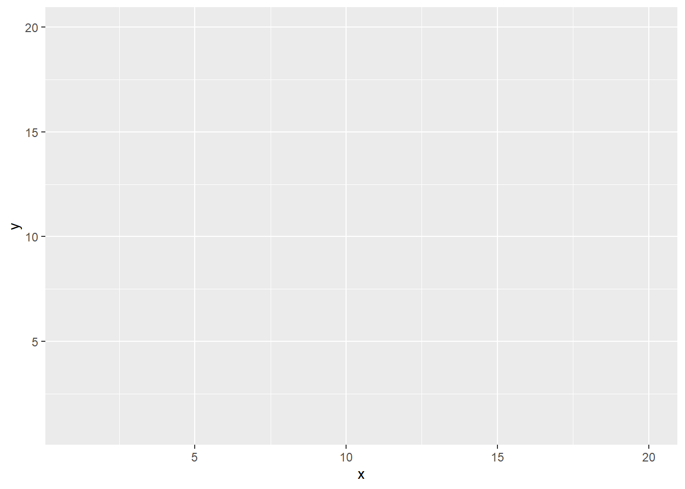
Observemos que tanto x como y aparecen en cada eje como etiqueta y que las escalas se generan automáticamente a partir de las escalas de las variables. Dentro del lienzo gris del plot no se visualiza aún ningún elemento geométrico.
Agreguemos la primer capa en el ggplot para indicarle que elemento geométrico usaremos. En este caso geom_point() define una capa de puntos. La capa geométrica le da forma y nombre al tipo de gráfico.
datos |>
ggplot(mapping = aes(x = x, y = y)) +
geom_point(size = 3)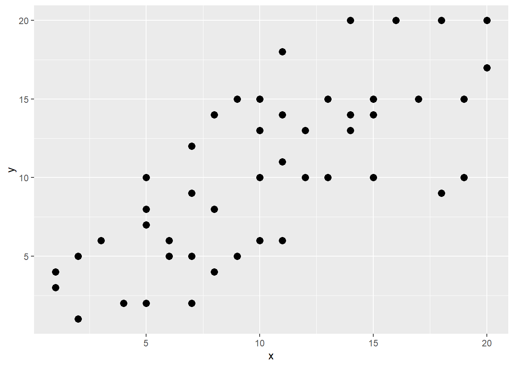
Se puede hacer participar a otra variable más que mapeamos con el color de los puntos. En este caso la variable categórica z de datos.
datos |>
ggplot(mapping = aes(x = x, y = y, color = z)) +
geom_point(size = 3)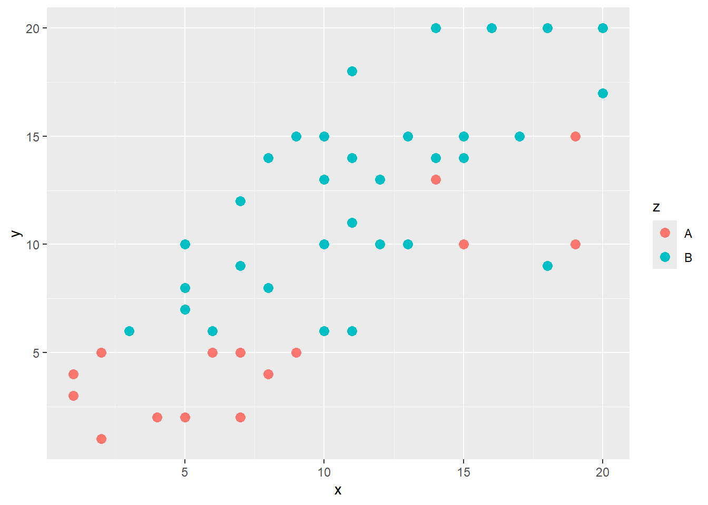
Notemos que cuando mapeamos variables lo hacemos dentro de la función aes() del mapping del ggplot. Esta función permite mapear ejes, colores de contorno y relleno, opacidades, entre otros elementos graficos.
Si en lugar de mapear una variable queremos definir un color fijo para un elemento gráfico debemos escribirlo fuera del aes(). Por ejemplo, para que todos los puntos sean color azul debemos escribir el argumento color = “blue” dentro del geom_point() directamente. Además cambiamos el tamaño y forma del punto.
datos |>
ggplot(mapping = aes(x = x, y = y)) +
geom_point(color = "blue", shape = 17, size = 3)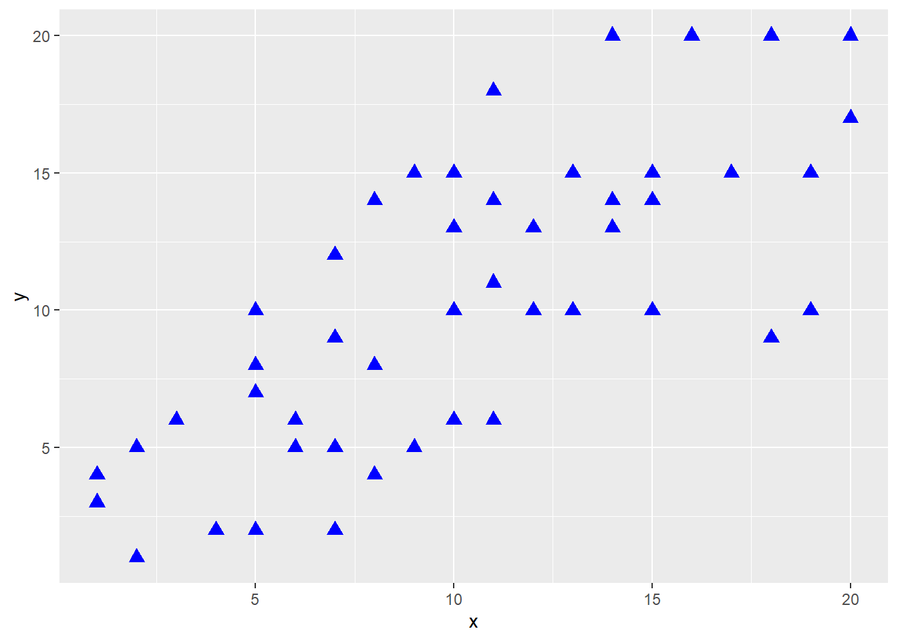
Las formas de puntos surgen de esta tabla numerada.
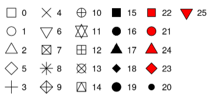
Los mapeos declarados en la función ggplot() principal son globales, es decir que aplican a todas las capas con elementos geométricos posteriores. Para mostrar su efecto agregamos una capa de recta de regresión (en este caso con el método de regresión lineal).
datos |>
ggplot(mapping = aes(x = x, y = y, color = z)) +
geom_point(size = 3) +
geom_smooth(method = "lm")`geom_smooth()` using formula = 'y ~ x'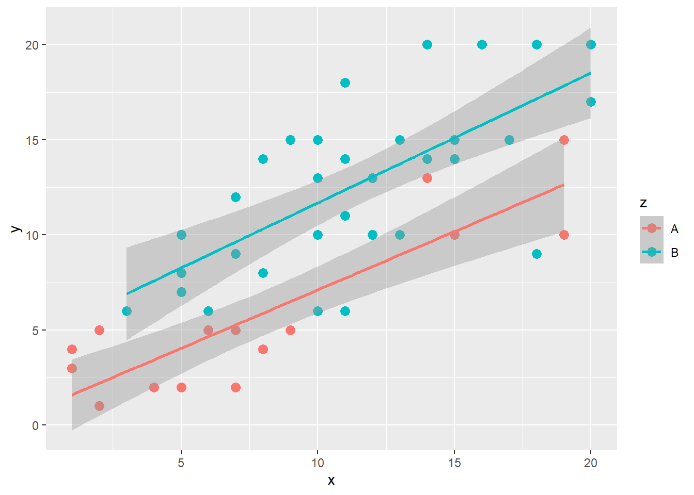
El gráfico muestra que para cada conjunto de puntos (categoría A y B de la variable z) de dibuja una recta distinta respectando la declaración global del aes().
En cambio, si a la variable z la declarásemos solo en una de las capas geométricas (por ejemplo la de puntos), obtendríamos una sola recta de regresión, dado que esa definición termina siendo local y no global.
datos |>
ggplot(mapping = aes(x = x, y = y)) +
geom_point(aes(color = z), size = 3) + # estética local (solo en puntos)
geom_smooth(method = "lm")`geom_smooth()` using formula = 'y ~ x'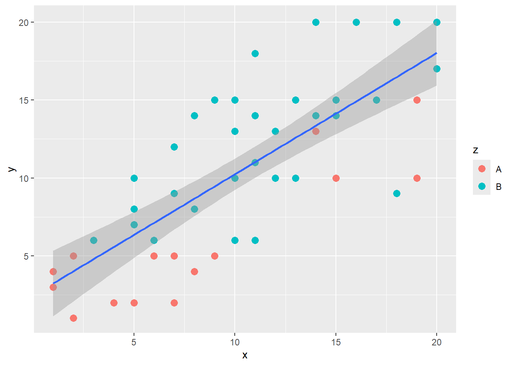
Estéticas
Observamos que la estética de un gráfico refiere a alguna propiedad visual que representa a los datos que estamos mostrando gráficamente.
Los argumentos posibles dentro de aes() son:
color = color de la línea de contorno de un polígono tipo barra, boxplot, etc., o el color de punto y lineas.
fill = el color de relleno de polígonos (por ejemplo, de una barra, boxplot, áreas, etc)
shape = formas que representan un punto (estrella, triángulo, cuadrado, círculo, etc)
size = tamaño del geom (por ejemplo, grosor de línea, tamaño de punto)
alpha = transparencia (1 = opaco, 0 = invisible)
width = ancho de las columnas de un gráfico de barras
linetype = tipo de línea (por ejemplo, sólida, discontinua, punteada)
Capa geométrica
Anteriormente decíamos que el tipo de gráfico que queremos construir se decide por el elemento geométrico utilizado en la estructura del ggplot.
Entre las funciones más utilizadas tenemos:
| Gráfico | Función |
|---|---|
| Área | geom_area() |
| Densidad | geom_density() |
| Polígono de frecuencia | geom_freqpoly() |
| Histograma | geom_histogram() |
| QQ-Plot | geom_qq() |
| Barras | geom_bar() |
| Puntos | geom_point() |
| Línea regresión | geom_smooth() |
| Líneas | geom_line() |
| Boxplot | geom_boxplot() |
| Violin plot | geom_violin() |
| Barras de error | geom_errorbar() |
| Dotplot | geom_dotplot() |
| Puntos al azar | geom_jitter() |
| Texto | geom_text() |
| Etiquetas | geom_label() |
Muchas de estas funciones se utilizan simultáneamente en capas diferentes del gráfico, por ejemplo podemos hacer un gráfico de barras con una capa de etiquetas. Algunas de las funciones se construyen con estéticas cuantitativas (boxplot) o categóricas (barras), pero también se pueden combinar (por ejemplo, un boxplot por cada categoría de una variable cualitativa).
También se pueden activar otros paquetes que extienden la idea del ggplot para crear gráficos con otras capas, como heatmap, ridgeline, dispersión de puntos con barras marginales, rain plot, treemaps, waffles, Upset, etc.
Las estéticas van a cambiar en base al elemento geométrico elegido. En un diagrama de puntos puede que usemos size, color, shape para el tamaño, el color y la forma del punto respectivamente y en un gráfico de barras podemos usar fill y width para el color de relleno y el ancho de la barra, por ejemplo.
Ejes
Los gráficos con coordenadas cartesianas tienen dos ejes. Estos se pueden configurar mediante las capas scale_x_* y scale_y_*. Hay escalas para distintos tipos de datos y ggplot implementa funciones con sufijos como:
continuous: valores continuosdate: valores tipo fechadatetime: valores fecha y horalog10: valores logaritmicosdiscrete: valores discretos
Estas funciones tienen argumentos comunes para definir los límites (limits), el titulo (name) y los cortes que queremos para las marcas del eje (breaks).
En ocasiones necesitamos construir gráficos con doble eje y, es decir visualizar simultáneamente dos variables relacionadas con el mismo eje x donde cada una tiene una escala diferente.
Algunas de esta funciones de escala traen un argumento especial llamado sec.axis = que se puede combinar con la función de ggplot del mismo nombre (sec_axis()) para definir ese segundo eje que será representado en el extremo derecho del gráfico.
sec_axis() no permite construir un eje y completamente nuevo. Simplemente construye uno basado en el primero, aplicando una transformación matemática, como el logaritmo o la raíz cuadrada.
Habrá que tener en cuenta que las magnitudes de escala de ambas capas sean consistentes para lograr una visualización armoniosa.
Facetas
Las facetas son una herramienta poderosa en ggplot2 que permite dividir un gráfico en múltiples paneles, cada uno mostrando la información para un subgrupo específico de los datos. Esto resulta particularmente útil para explorar la interacción entre dos o más variables categóricas, facilitando la identificación de patrones y tendencias que podrían pasar desapercibidos en un gráfico único.
Las facetas se implementan principalmente mediante dos funciones: facet_wrap() y facet_grid().
facet_wrap()organiza los paneles por una única variable categórica, creando filas o columnas de gráficos según el número de niveles de la variable.facet_grid()utiliza dos variables categóricas para organizar los paneles en una cuadrícula, permitiendo explorar la interacción entre ambas variables.
Las facetas no solo mejoran la organización de la información, sino que también incrementan la claridad y la legibilidad de los gráficos, especialmente cuando se trata de conjuntos de datos con múltiples categorías. Además, permiten crear gráficos más compactos y eficientes en cuanto al espacio, aprovechando al máximo el área disponible.
Con los datos anteriores podemos utilizar la variable z para sumar una capa de facetas.
datos |>
ggplot(mapping = aes(x = x, y = y, color = z)) +
geom_point(size = 3) +
facet_wrap(~z) # formato columnas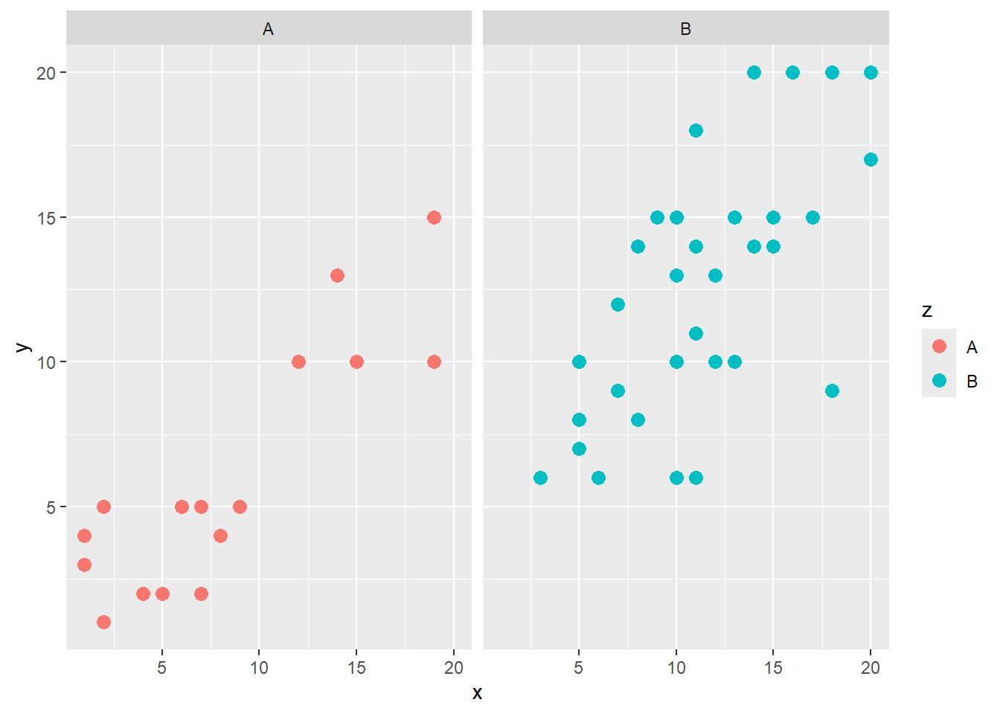
Colores
Otro elemento esencial para lograr gráficos atractivos son los colores. ggplot2 ofrece una amplia gama de funciones scale_* que permiten personalizar y controlar el uso del color en cada componente del gráfico.
Paletas de colores
ggplot2 proporciona paletas predeterminadas para diferentes tipos de datos, como Set1, Set2, Darked, etc.
Además, existen paquetes externos como RColorBrewer y viridis que ofrecen una amplia variedad de paletas de colores adicionales. La elección de la paleta dependerá del tipo de datos, la estética deseada y el mensaje que se quiere transmitir con el gráfico.
Un sitio útil que muestra paquetes de paletas de colores es Palette finder. Esos paquetes deben ser instalados y activados previamente para poder utilizar sus colores.
Funciones scale_*
Existen dos funciones scale_*() principales que permiten ajustar el uso del color en las partes de los elementos gráficos:
scale_color_*(): Define la paleta de colores y la asignación de colores de contorno o elementos tipo puntos y lineas.scale_fill_*(): Controla el color de relleno para elementos como barras o áreas.
El asterisco se reemplaza por nombres que refieren a una característica de la escala y el tipo de variable asociada:
scale_color_discrete() para variables categóricas
scale_fill_continuous() para variables cuantitativas continuas
scale_color_manual() para definir colores en forma manual
R es compatible con muchos formatos de colores. Tiene 657 colores bajo nombres que se pueden visualizar mediante la ejecución de la función colors(), también se puede convocar mediante números y expande sus posibilidades a partir del formato hexadecimal hasta 16.777.216 combinaciones.
La página ColorHexa entre otras similares ofrecen seleccionar colores visualmente y copiar el código hexadecimal correspondiente.
Otra cuestión a tener en cuenta es la accesibilidad para personas daltónicas, es decir utilizar paletas de colores amigables que garanticen que la información sea accesible para todxs. Un paquete en R que aborda este tema es colorBlindness.
Coordenadas
Es muy fácil invertir un gráfico. La función de coordenadas coord_flip() es todo lo que se necesita para hacerlo. Esto es útil con gráficos de barras para dibujarlas horizontales, por ejemplo. También funciona con cualquier otro tipo de capa geométrica.
Si necesitamos ajustar un eje con respecto a otro (relación de aspecto del sistema de coordenadas cartesianas) se puede aplicar coord_fixed().
Tomando el diagrama de dispersión previo:
datos |>
ggplot(mapping = aes(x = x, y = y, color = z)) +
geom_point(size = 2) +
coord_fixed(ratio = 1/3) 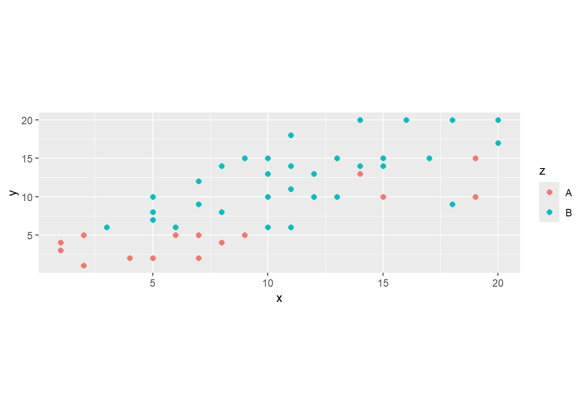
También se puede transformar a las coordenadas cartesianas en polares con coord_polar() para la construcción de gráficos circulares como de torta/sectores o similares.
Personalización
La función theme() de ggplot2 brinda el poder de personalizar cada aspecto de la estética de un gráfico.
Con theme() se puede modificar elementos como:
- Fuentes: Selecciona las fuentes para títulos, etiquetas y textos del gráfico.
- Leyenda: Controla la posición, el formato y el estilo de la leyenda.
- Ejes: Personaliza el grosor, el color, las marcas y las etiquetas de los ejes.
- Título: Define el estilo y la ubicación del título del gráfico.
- Cuadrícula (grid): Controla la apariencia de la cuadrícula de fondo, incluyendo su color, grosor y tipo de línea.
Los argumentos de la función theme() comienzan con un nombre del elemento en cuestión y le siguen nombres relacionados a caracteristicas de esos elementos.
Por ejemplo, para los ejes, el argumento axis.* tiene nombres como title, text, ticks, line que se igualan a funciones tipo element_line() para personalización de líneas, element_text() para textos, etc.
Hagamos un pequeño ejemplo con el gráfico de puntos que desarrollamos en el documento.
datos |>
ggplot(mapping = aes(x = x, y = y, color = z)) +
geom_point(size = 3) +
labs(title = "Grafico de puntos", # titulo de grafico
x = "Eje x", # titulo de eje x
y = "Eje y") + # titulo de eje y
scale_colour_brewer(palette = "Set1", # paleta Set1 en color
name = "Variable z") +
theme(axis.title.x = element_text(face = "bold"), # titulo de eje x en negrita
axis.title.y = element_text(color = "red"), # titulo de eje y color rojo
axis.text.x = element_text(size = 8), # texto de eje x tamaño 7 pts
axis.text.y = element_text(face = "italic"), # texto de eje y en itálica
legend.title = element_text(size = 14), # titulo de leyenda tamaño 12 pts
plot.title = element_text(size = 18, face = "bold")) # titulo de grafico tamaño 16 pts y negrita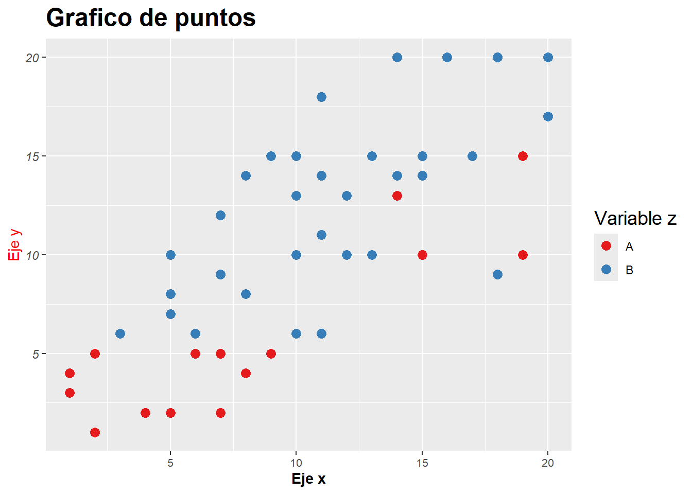
Personalizar temas permite mantener un estilo consistente en diferentes gráficos para crear una experiencia visual uniforme y mejorar su legibilidad.
Es muy útil almacenar la personalización y aplicarla a los gráficos donde la necesitamos.
mi_tema <- theme(axis.title.x = element_text(face = "bold"),
axis.title.y = element_text(color = "red"),
axis.text.x = element_text(size = 8),
axis.text.y = element_text(face = "italic"),
legend.title = element_text(size = 14), #
plot.title = element_text(size = 18, face = "bold")) datos |>
ggplot(mapping = aes(x = x, y = y, color = z)) +
geom_point(size = 3) +
labs(title = "Grafico de puntos", # titulo de grafico
x = "Eje x", # titulo de eje x
y = "Eje y") + # titulo de eje y
scale_colour_brewer(palette = "Set1", # paleta Set1 en color
name = "Variable z") +
mi_temaSe sugiere comenzar con personalizaciones simples y avanzar gradualmente a modificaciones más complejas de forma progresiva.
Exportación
La función ggsave() exporta los graficos generados por ggplot2 en distintos formatos, tamaños y resoluciones.
La sintaxis con los argumentos opcionales es:
ggsave(filename, # nombre del archivo
plot = last_plot(), # nombre del objeto gráfico
device = NULL, # formato de salida "jpeg", "png", "tiff", "pdf", etc
width = NA, # ancho en unidades de units
height = NA, # alto en unidades de units
units = c("in", "cm", "mm"), # unidades de medidas
dpi = 300) # resolución de salida en dpiTambién es posible introducir las salidas gráficas en fragmentos de código de documentos Quarto para producir archivos html, pdf y docx de Microsoft Word.
Composición de gráficos
Dentro de los paquetes complementarios del sistema ggplot, patchwork surge como una herramienta muy útil para la composición de gráficos de manera intuitiva y eficiente. A diferencia de las funciones de facetado propias de ggplot2, patchwork se enfoca en la flexibilidad y personalización, permitiendo crear composiciones complejas con mayor control sobre la disposición y el estilo de los gráficos individuales.
Se basa en el concepto de fragmentos que se pueden combinar, superponer y organizar libremente utilizando operadores intuitivos como +, | y ~.
| Operador | Función |
|---|---|
| + | Combina gráficos horizontalmente. |
| | | Combina gráficos verticalmente. |
| ~ | Apila gráficos uno encima del otro. |
Además de la simple combinación, patchwork ofrece herramientas para personalizar el diseño de la composición final, teniendo en cuenta márgenes, espacios, alineación y proporciones.
Imaginemos que tenemos varios gráficos que visualizar combinados (en nuestro ejemplo lo haremos con el único gráfico que construimos).
grafico <- datos |>
ggplot(mapping = aes(x = x, y = y, color = z)) +
geom_point(size = 2)
library(patchwork)
(grafico + grafico) / grafico 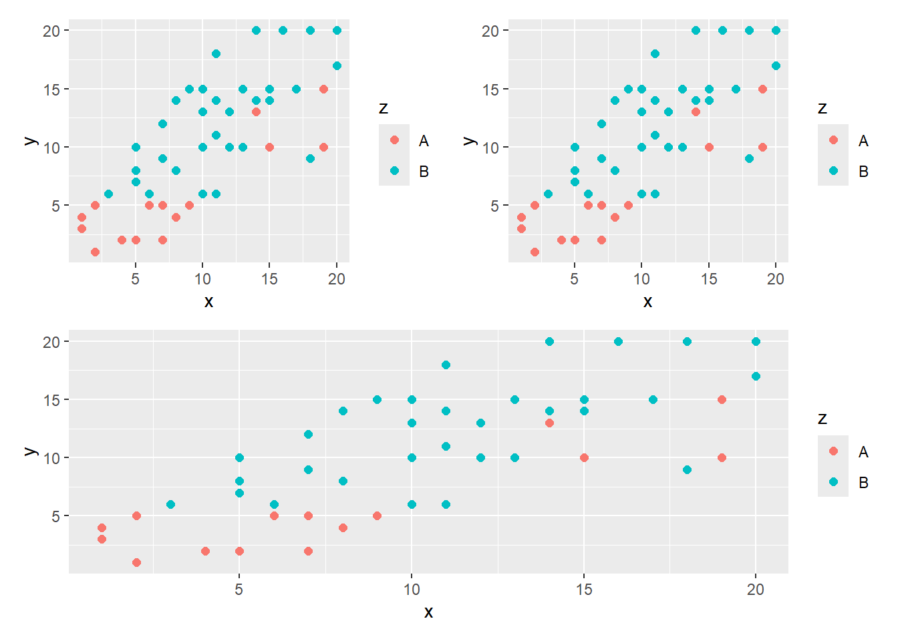
Combinamos mediante operadores básicos una salida de tres gráficos.